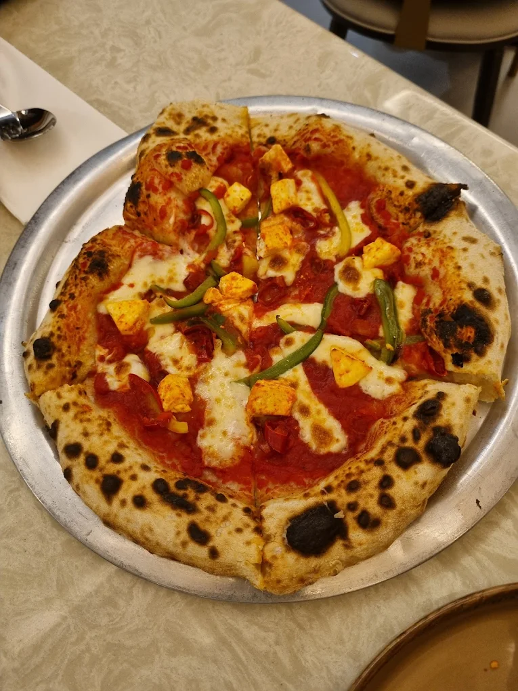

Hello! My name is Purva, and I am a food lover who enjoys exploring different flavors and cuisines. Trying new dishes and visiting different restaurants are some of my favorite activities. Food is not just something I eat—it is an experience that brings people together and creates memories.
My favorite cuisine is Italian cuisine. I love dishes like pizza, pasta, garlic bread, and lasagna. The rich flavors, fresh ingredients, and variety of sauces make Italian food delicious and enjoyable.
One of the best meals I ever had was during a family dinner at an Italian restaurant. I ordered a cheese-loaded pizza and creamy white sauce pasta. The food was fresh, flavorful, and perfectly cooked. Sharing the meal with my family made the experience even more special. It was a memorable evening filled with great food, laughter, and happy moments.

Click on the image to visit the restaurant's website.